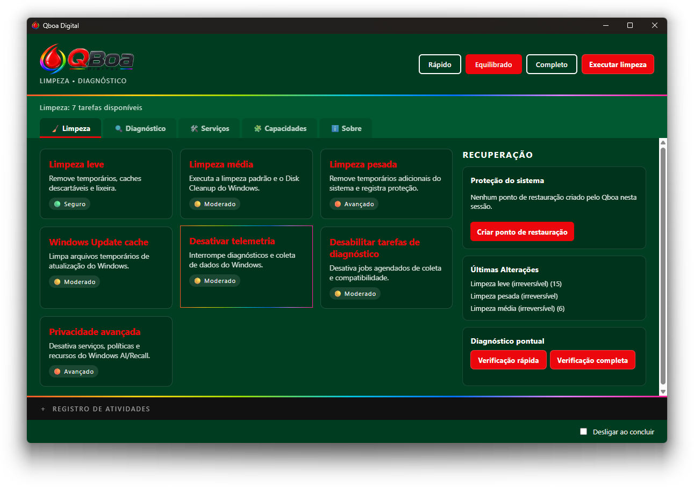
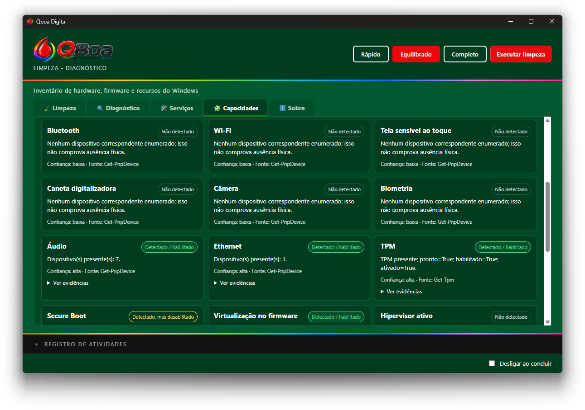

Limpeza completa
Remove arquivos temporários, caches de navegadores, arquivos recentes e restos do Windows Update — sem tocar em cookies, sessões ou pastas fixadas.
A nova geração do QBoa: um aplicativo desktop para limpeza, privacidade e manutenção do Windows, com interface própria, inventário de capacidades do Windows, catálogo de recursos e ferramentas de diagnóstico.
Versões históricas: QBoa 1.0 (BAT)·QBoa 2.0 (BAT)
QBoa Digital 3.1.2 · notas da versão atualizadas · downloads para Windows x64 · legado BAT 1.0 e 2.0 · Site CC BY-SA 4.0 · aplicativo GPL-3.0
Um mecanismo de tarefas com metadados de risco, reversibilidade e estratégia de rollback para cada operação.
Remove arquivos temporários, caches de navegadores, arquivos recentes e restos do Windows Update — sem tocar em cookies, sessões ou pastas fixadas.
Ajusta serviços, tarefas agendadas e políticas de telemetria, incluindo políticas relacionadas a Recall e Copilot quando disponíveis.
Verificação e reparo da imagem do Windows com DISM, checagem de arquivos do sistema com SFC e limpeza de componentes.
Pontos de restauração do Windows antes de tarefas arriscadas e snapshots JSON próprios para reverter registro, serviços e tarefas agendadas.
A interface envia apenas IDs de tarefas — o backend em Rust valida e executa, sem comandos arbitrários de shell, com log técnico de cada execução.
Identificação e organização das capacidades e recursos disponíveis no Windows, com informações mais claras para orientar a manutenção.
Consulte os serviços do sistema e aplique ajustes compatíveis com as tarefas disponíveis. As alterações reversíveis registram o estado anterior para permitir rollback.
Aplicativo GPL-3.0; site CC BY-SA 4.0. Desenvolvido com Tauri, Rust, HTML, CSS e JavaScript puro. Todo o código está aberto no GitHub.
Uma visão rápida das principais áreas do aplicativo desktop.




O QBoa combina tecnologias modernas para oferecer um utilitário desktop nativo, com interface própria e integração com recursos do Windows.
Aplicativo desktop multiplataforma
Backend nativo e operações do sistema
Lógica e interações da interface
Estrutura da interface
Estilo e apresentação visual
Plataforma-alvo: Windows 10 e 11
Escolha um preset e deixe o QBoa executar a sequência de tarefas para você.
Limpeza leve e informações do sistema. Apenas operações de baixo risco.
Telemetria, limpeza de rotina e informações do sistema.
Limpeza pesada com Windows Update, DISM, limpeza de componentes e SFC — com proteção reforçada.
Antes de qualquer alteração arriscada, o QBoa cria um ponto de restauração do Windows. Ajustes reversíveis de registro, serviços e tarefas agendadas são registrados em snapshots e podem ser desfeitos com rollback validado — tudo com log técnico e opção de cancelar a execução a qualquer momento.
Uma linha do tempo do que já construímos, do que está em desenvolvimento e dos próximos passos — sem datas artificiais ou promessas fechadas.
A chegada da interface desktop construída com Tauri, levando a experiência do QBoa para além dos scripts de linha de comando.
Mais visibilidade sobre os recursos do Windows e ferramentas para consultar e gerenciar serviços com prévia e confirmação das alterações.
Diagnósticos por componente e uma visão mais ampla do Windows, com resultados organizados para ajudar o usuário a entender as condições observadas no computador.
Ampliação das opções para personalizar componentes e aspectos do Windows, adequando o sistema às preferências de cada usuário.
O roadmap representa intenções de desenvolvimento e não constitui promessa de entrega. Escopo, ordem e disponibilidade podem mudar.
Da linha de comandos à aplicação desktop: veja como o QBoa evoluiu.
LINHA DESKTOP · 3.0
VERSÃO · 3.1.0
VERSÃO · 3.1.1
VERSÃO ATUAL · 3.1.2
A versão 3.1.2 está publicada para Windows x64. Consulte o changelog e os arquivos da release no GitHub.
O QBoa Digital é gratuito e open source. Você pode contribuir com código, testes, ideias e relatos de problemas no GitHub — ou apoiar o desenvolvimento com um Pix de qualquer valor.
![QR Code para contribuição via Pix]()
Escaneie com o app do seu banco